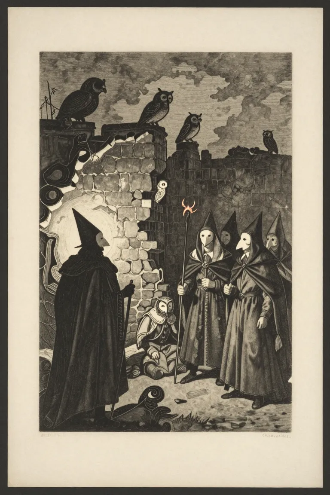

Rosin dust is melted onto a copper plate, and acid bites round each grain. The print has a soft tone like a wash. The artist controls the tone with varnish and a burnisher, so the print has a grey speckled grain.

Core thesis
A bitten grain of rosin gives a copper plate the soft tone of a wash. An etched line can then sit on a brush-like ground.
Design principles
Etch the contour first, then add the rosin ground and bite the tone areas in timed baths.
Make the tone in steps: stop out the lightest area first and bite the darkest area longest, with 3–6 steps in all.
Keep the grain visible as a speckle, about 100–150 grains an inch.
Lift the highlights with a burnisher or a scraper; do not paint them in.
Print in one warm black or sepia, and leave a plate mark round the image.
Keep the edge of each tone area hard where the stopping-out varnish stopped the acid.